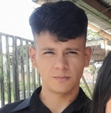

¡Hola! Soy un estudiante en desarrollado web e Ingeniería en Sistemas
Computacionales, en la Universidad Nacional Autónoma de Honduras
(UNAH).
Mi principal objetivo es culimar con exito mis estudios y obtener mi
título universitario, y que eso me permita obtener un buen empleo en el
área de desarrollo web, así poder ayudar a mi familia y a mi país.
Me gusta mucho la programación, y me esfuerzo por aprender cada día más
sobre esta área. Soy una persona responsable, comprometida y con muchas
ganas de aprender.
Estoy seguro de que con esfuerzo y dedicación podré alcanzar mis metas y
cumplir mis sueños.
Instituto Jose Cecilio del Valle (IJCV), 2019-2020
Udemy, 2026
Cable Color, 2023-2024 (6 meses)
Mi deber era vender cable de red y ofrecer servicios de instalación en toda tegucigalpa.
Tigo, 2024 (3 meses)
Mi deber era vender servicios de cable digital y ofrecer soporte técnico a los clientes, ademas de cobrar los servicios de cable digital a los clientes y mantenner un buen servicio al cliente.
Techline, 2024 (1 mes)
Mi deber era realizar llamadas a clientes potenciales para ofrecer servicios de internet y televisión por cable, ademas de brindar soporte técnico a los clientes y resolver sus dudas y problemas.
PedidosYa, Speedy y Dilo, 2024 (4 meses)
Mi deber era realizar entregas de comidas y productos a clientes en diversas ubicaciones de la ciudad, asegurándome de que los pedidos llegaran en tiempo y forma.
Domino's Pizza, 2025 - Presente
Mi deber es entregar pedidos a domicilio en el area de cubertura permitido por el restaurante, asegurandome de una excelente atencion al cliente. Ademas de realizar tareas de limpieza y mantenimiento del restaurante, y ayudar en la cocina cuando sea necesario.